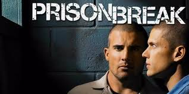

LIST OF MOVIES!!!

Snowden
Genre: Drama, political
Release date: Sep 16, 2016
Description: Academy Award (R)-winning director Oliver Stone, who brought Platoon, Born on the Fourth of July, Wall Street and JFK to the big screen, tackles the most important and fascinating true story of the 21st century. Snowden, the politically-charged, pulse-pounding thriller starring Joseph Gordon-Levitt and Shailene Woodley, reveals the incredible untold personal story of Edward Snowden, the polarizing figure who exposed shocking illegal surveillance activities by the NSA and became one of the most wanted men in the world. He is considered a hero by some, and a traitor by others. No matter which you believe, the
Swiss Army Man
Genre:Drama-comedy, fantasy
Release date:Jun 24, 2016
Description:Outrageously fun and deeply affecting, Swiss Army Man is a gonzo buddy comedy that is the feature film debut of acclaimed music video directors Daniel Scheinert and Daniel Kwan (collectively known as DANIELS, and responsible for the visionary "Turn Down For What" video, among many others). Bursting with limitless creativity in both form and content, Swiss Army Man goes from the absurd to the emotional to the whimsical to the profound and back again. Hank (Paul Dano) is stranded on a deserted island, having given up all hope of ever making it home again. But one day everything changes when a corpse
Prison Break
Genre:Action & Adventure, drama, crime.
Release date:2005-2017
Description:A mechanical engineer gets himself incarcerated so he can spring his death-row brother (framed for killing the vice-president's brother) in this taut drama that's too intense for younger children.
Jason Bourne
Genre:Action & Adventure, Drama
Release date:Jul 29, 2016
Description:The next chapter of Universal Pictures' Bourne franchise, which finds the CIA's most lethal former operative drawn out of the shadows.

Tower Heist
Genre: Action & Adventure, Comedy, Drama
Release date: Nov 4, 2011
Description: Ben Stiller and Eddie Murphy lead an all-star cast in Tower Heist, a comedy caper about working stiffs who seek revenge on the Wall Street swindler who stiffed them. After the workers at a luxury Central Park condominium discover the penthouse billionaire has stolen their retirement, they plot the ultimate revenge: a heist to reclaim what he took from them.